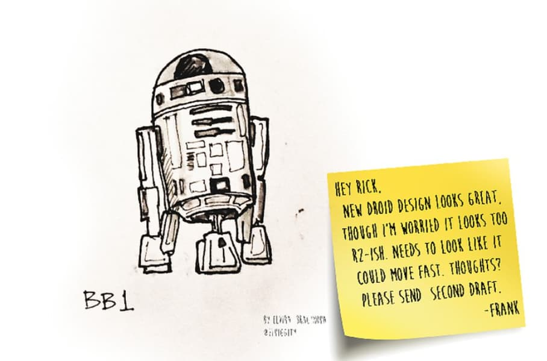
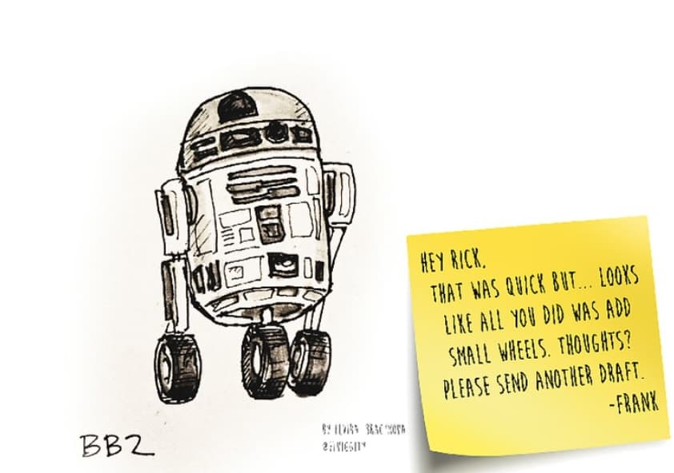
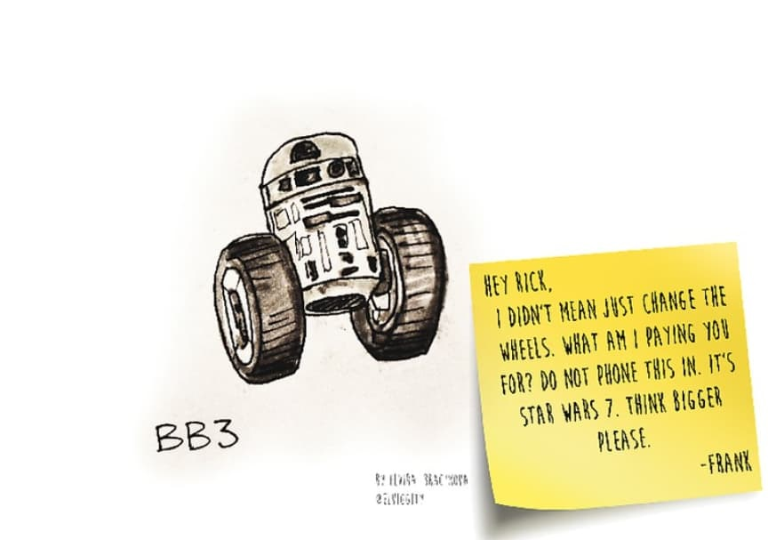
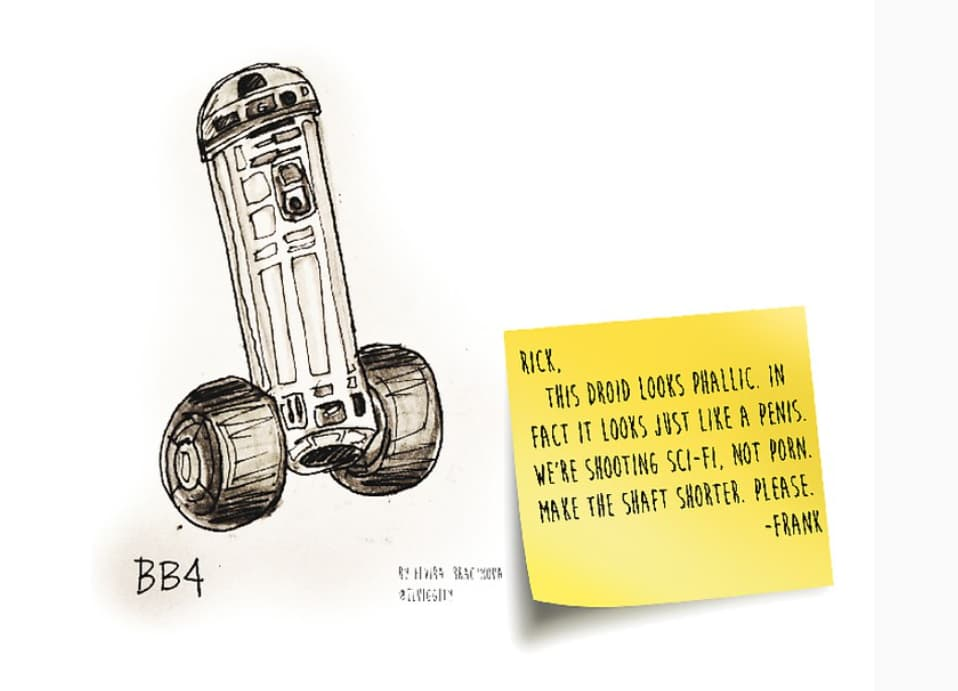
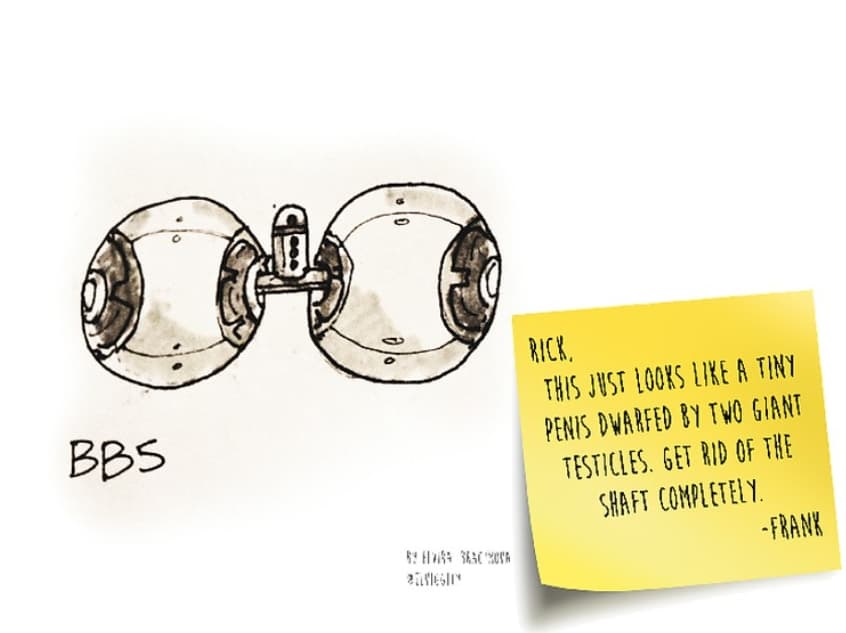
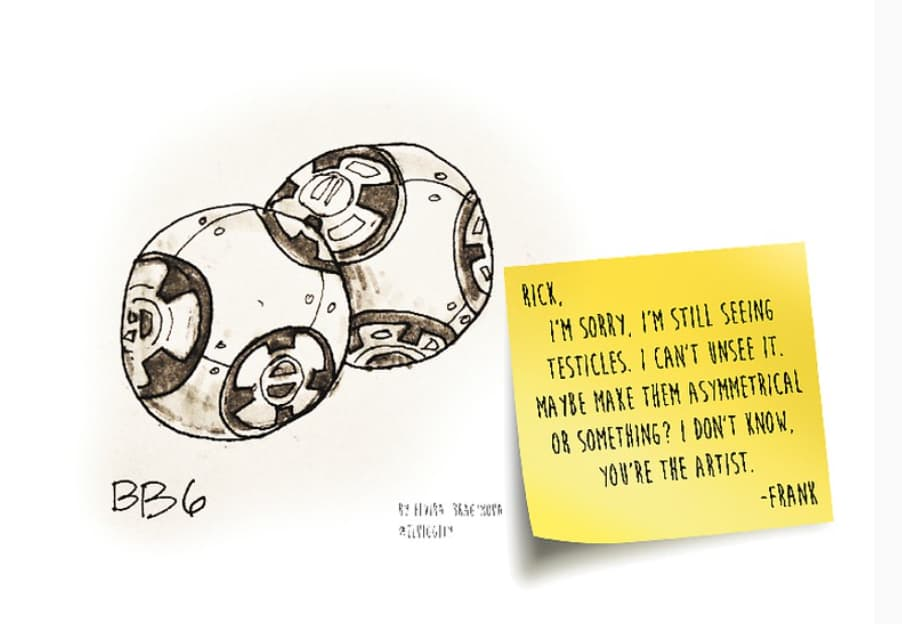
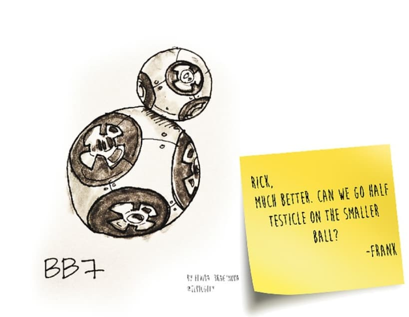
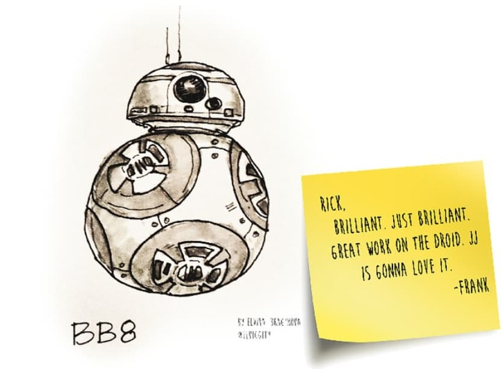

BB-8
Fan version of creation

About
Last year, we learned that BB-8 from Star Wars: The Force Awakens was originally conceived by JJ Abrams himself early on in the film. JJ just sketched a spherical droid, with an extra dome. Abrams also named this droid.
However, there is an alternative theory as to why BB-8 is called BB-8, as well as the process of his evolution from the classic R2D2. The theory was invented by Elvira Ibragimova
Gallery
- 
- 
- 
- 
- 
- 
- 
- 
BB-8 abilities
-
jerk
Roll Dash: BB-8 charges forward to knock down and injure the first enemy that gets in his way.
-
Cable rotation
BB-8 ejects cables and spins around, dealing heavy damage to all nearby enemies.
-
Resistance Support
The BB-8 jams enemy radars and marks the location of enemies for itself and allies.